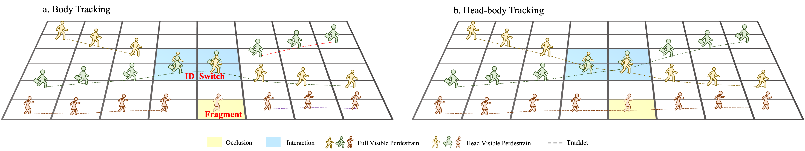
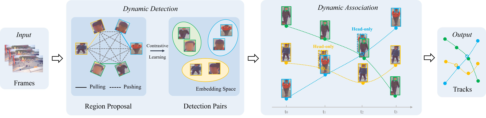
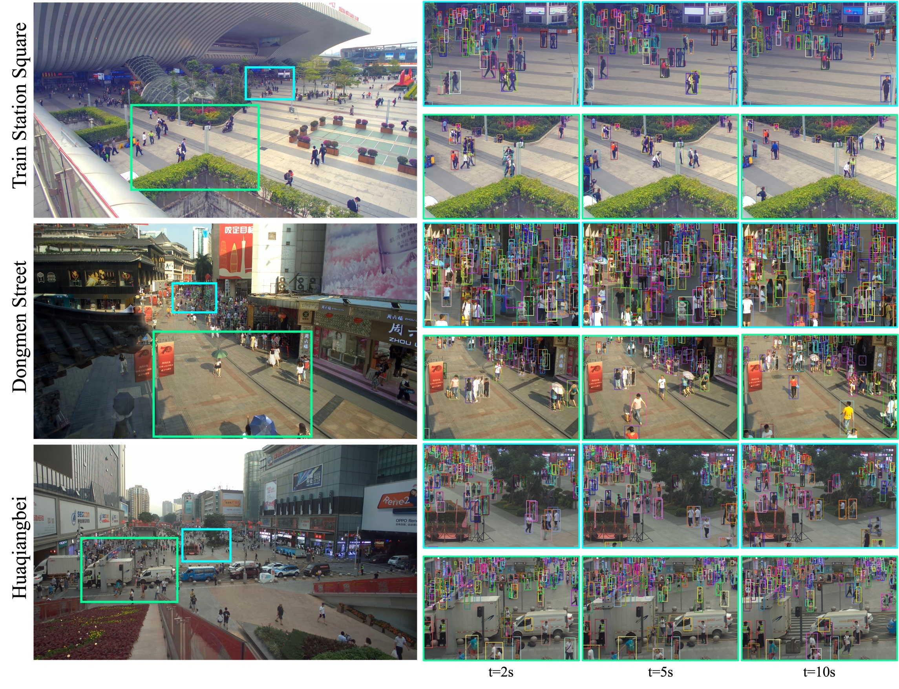

Tracking in gigapixel scenarios holds numerous potential applications in video surveillance and pedestrian analysis. Existing algorithms attempt to perform tracking in crowded scenes by utilizing multiple cameras or group relationships. However, their performance significantly degrades when confronted with complex interaction and occlusion inherent in gigapixel images. In this paper, we introduce DynamicTrack, a dynamic tracking framework designed to address gigapixel tracking challenges in crowded scenes. In particular, we propose a dynamic detector that utilizes contrastive learning to jointly detect the head and body of pedestrians. Building upon this, we design a dynamic association algorithm that effectively utilizes head and body information for matching purposes. Extensive experiments show that our tracker achieves state-of-the-art performance on widely used tracking benchmarks specifically designed for gigapixel crowded scenes.
We propose a framework of dynamic tracking with head and body features. (a) Dynamic detection: Contrastive learning-based detector achieves simultaneous detection of both the body and the head for pedestrian tracking. (b) Dynamic association: Dynamically utilizing head and body of the same identity for matching to achieve robust tracking in crowded scenes.
We have selected gigapixel sequences from the test set of PANDA to demonstrate the effectiveness of DynamicTrack in handling complex crowded scenarios.
In this paper, we address the challenging task of gigapixel tracking in crowded scenes by introducing DynamicTrack. To enhance the robustness to occlusion, we incorporate head information in addition to the traditional body-based features and leverage contrastive learning for dynamic detection. Moreover, we propose dynamic association algorithms for body-head tracking to overcome the challenges posed by gigapixel crowded sequences. Experimental results on benchmark MOT20 and PANDA have shown that our approach outperforms the state-of-the-art trackers in crowded scenes. The future plan is to integrate the dynamic detection framework into the latest transformer-based detectors to further enhance the tracking performance in crowded scenes.